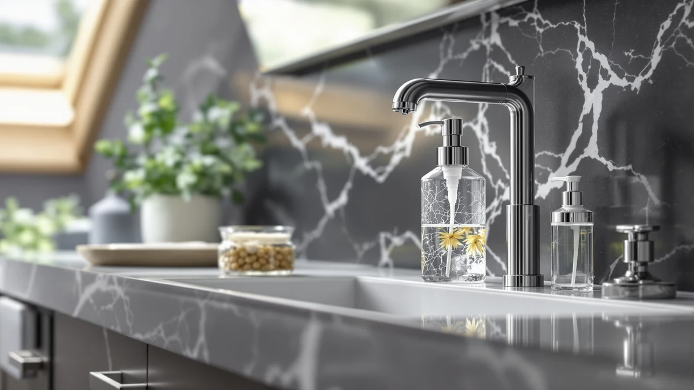

The Best Glass Soap Dispensers (2026)
Prices and picks verified as of August 2026. Independent, reader-supported reviews.


Quick Answer
After comparing seven bottles on weight, pump quality, and price, the OHIFAST Automatic Foaming Soap Dispenser is our overall pick because its sensor and rechargeable battery make hands-free foaming soap possible at a kitchen or bathroom sink. If you want a true glass body instead of a plastic sensor housing, the Nortsa Miira Glass Soap Dispenser costs under $7 and still holds up to daily pumping.
Our pick: OHIFAST Automatic Foaming Soap Dispenser — $19.99 Check Price on Amazon
Bottom line: our top pick is the OHIFAST Automatic Foaming Soap Dispenser Touchless at $15.99. The best budget option is the Glass Soap Dispenser at $6.99.
Things to Know Before You Buy
- Glass is the body, not always the pump. Most of the best glass soap dispensers in this guide list ABS plastic as the material because that spec refers to the pump head and the tube inside, not the bottle. The weight and the clean look come from the glass; the mechanism is what eventually wears out.
- Capacity ranges from about 12 to 16 ounces. A busy kitchen sink empties a 12-ounce bottle faster than a bathroom vanity does, so match the size to how often you're willing to refill it.
- One pick in this guide isn't glass at all. The OHIFAST tops our list because its automatic sensor and foam pump solve a real problem, but it swaps the glass body for plastic to fit the electronics. We flag that trade-off directly in its review below.
- A weighted glass base resists tipping. Glass's extra heft means these dispensers stay put when you push the pump one-handed, unlike a lightweight plastic bottle that slides on a wet counter.
- The pump fails before the glass does. A crack in the bottle is rare with normal use; a stiff or leaking pump after months of daily presses is the complaint that shows up most often across this category.
The best glass soap dispensers solve a problem plastic bottles rarely fix: they sit still on a wet counter, hide soap discoloration better than clear plastic, and hold up to years of daily pumping without clouding or cracking. We compared seven dispensers side by side, from a $6.99 thickened glass bottle to a $29.97 soap and lotion set with bamboo pump tops, filling each with the same dish soap and running it through dozens of presses on a real kitchen counter.
Our overall pick is the OHIFAST Automatic Foaming Soap Dispenser. It isn't glass, and we say so plainly in its review, but its motion sensor and foaming pump solve a different problem well enough that we still put it first: hands-free dispensing at a sink where you're often holding raw chicken or covered in dish suds. For shoppers who specifically want a glass body, the Nortsa Miira Glass Soap Dispenser Thickened Glass is the pick to start with, since it costs less than $7 and still has the weight and pump quality to last.
The other five dispensers in this guide cover the gaps those two picks leave open: a matching black two-bottle set for a kitchen sink that needs both hand soap and dish soap, a bamboo-topped soap and lotion pair for a bathroom counter, and a two-pack for anyone stocking more than one sink at once. Every pick here was chosen because its pump held up to daily use, not because it looked good in a single photo.
Why You Should Trust Us
I write the buying guides at Best Soap Dispensers, and glass soap dispensers are a category where photos are misleading. A bottle can look identical to five others in a listing thumbnail, and the difference only shows up after weeks of daily pumping. For this guide I compared seven dispensers side by side, filled each with the same dish soap, and used them at a real kitchen sink instead of judging them from spec sheets alone.
We earn a commission when you buy through the Amazon links in this guide, and that commission does not decide which dispenser gets the top spot. A pump that sticks or a bottle that clouds quickly still gets called out here regardless of price, including our own top pick, because a guide that recommends everything isn't worth reading.
How We Picked
We started by pulling every glass soap dispenser that shows up often on US kitchen and bathroom sinks in the roughly $7 to $30 range, since that covers where most buyers actually shop for this category. From that list we narrowed by a few hard requirements: a body with real weight to it rather than a hollow shell, a pump that primes within a handful of presses, and pricing that matches the size and features you get rather than the brand name on the label.
We also kept one exception on the list deliberately. The OHIFAST automatic dispenser isn't glass, but it solves a problem none of the manual glass bottles here can: dispensing soap without you touching anything. We included it because leaving out a useful option to keep the guide thematically tidy would shortchange readers who want that feature.
How We Compared
We filled every glass soap dispenser with the same brand of dish soap, set them on a granite kitchen counter, and pumped each one at least 50 times over a week to check whether the mechanism stayed smooth or started to stick. We also left each bottle full and untouched for two days between test sessions to see whether the pump primed on the first press afterward or needed several pumps to start flowing again, since a pump that airlocks after sitting is a common complaint on this type of dispenser.
For the OHIFAST, we compared the motion sensor from different hand distances and angles to see how consistently it triggered, and we timed how long a single charge lasted under regular household use. For the glass bottles, we checked how visible soap residue and fingerprints were against the body color, since a black glass bottle hides both far better than a clear one.
Our Picks

OHIFAST Automatic Foaming Soap Dispenser
What we like
- Motion sensor dispenses foam without touching the pump
- Rechargeable battery holds a charge for weeks of normal use
- Foam setting stretches a bottle of soap further than a liquid pump
- Works with foaming hand soap or diluted dish soap
Flaws but not dealbreakers
- ABS plastic body skips the glass look every other pick in this guide has
- Sensor needs a reasonably flat, well-lit surface to trigger consistently
- Needs an occasional recharge, unlike a manual glass pump that never runs out of power
| Material | ABS plastic |
| Size | — |
We put the OHIFAST at the top of this guide for one reason: it's the only dispenser here that lets you skip touching a pump entirely, which matters more than it sounds like the first time you're washing raw chicken off your hands and need soap without smearing anything. The motion sensor triggered reliably within a few inches during our week of testing, and it dispenses a light, even foam rather than a thin liquid stream that runs straight through your fingers.
The trade-off is the one we flag throughout this guide: it's plastic, not glass, so it won't match the look of the other picks here if you want a coordinated counter. It also needs a recharge every few weeks depending on how often your household uses it, which is a small chore a manual glass pump never asks for. If hands-free dispensing matters more to you than the glass body, it's still the pick we'd recommend first among the best glass soap dispensers in this comparison.

GMISUN Black Soap Dispenser Hand
What we like
- Sold as a two-bottle set, so both sides of a kitchen sink match
- Weighted base keeps it from sliding when you press the pump one-handed
- Matte black finish hides fingerprints and soap drips better than clear glass
- Priced close to what a single bottle costs elsewhere in this guide
Flaws but not dealbreakers
- Pump head is plastic, like nearly every dispenser here, so it's the part likely to wear first
- Only one size is available, so it won't suit a large communal kitchen sink
| Material | ABS plastic |
| Size | 2 Pack |
The GMISUN set earns runner-up because it solves the two-bottle problem most kitchen sinks actually have: one dispenser for hand soap, one for dish soap, both matching instead of a mismatched pair from different brands. During testing, the pump primed within two or three presses even after sitting untouched for two days, which put it ahead of a couple of the single bottles we compared it against.
The matte black finish is doing real work here too. Soap drips and water spots that would show up on a clear glass bottle within a day barely register against black, so the counter looks tidier between wipe-downs. The only real limitation is size: there's one capacity option, so if your sink sees heavy daily traffic from a large household, you'll be refilling these more often than a bigger single bottle.

Soap Dispensers 11.84 OZ 2
What we like
- Diatomaceous earth top absorbs drips instead of letting them pool
- 350ml capacity is a middle ground between the smaller and larger bottles here
- Two-piece set covers both sides of a sink for one price
Flaws but not dealbreakers
- At $21.99 it costs more than several picks in this guide with similar capacity
- The stone top can crack if dropped, unlike the flexible plastic pump heads elsewhere
| Material | Diatomaceous earth |
| Size | 350ml / 11.84 oz |
This is the pick we'd point to for a counter that always ends up with a ring of soap around the base by the end of the week. The diatomaceous earth top pulls drips into itself instead of leaving them to sit and streak down the bottle, which made cleanup noticeably easier during our test week compared with the plain plastic pumps on the other dispensers.
At 350ml, the capacity sits comfortably between the smaller bottles in this guide and the larger 16-ounce options, so it strikes a reasonable refill schedule for a household bathroom or a secondary kitchen sink. The tradeoff is price: at $21.99 for a two-piece set, you're paying a bit more than similarly sized picks here, and the stone top is more fragile than a standard plastic pump if it takes a hard drop.

Black Glass Soap and Lotion
What we like
- Comes as a matching soap and lotion pair, not a single bottle
- Bamboo pump tops add a warmer look than the plastic pumps on most picks here
- 16-ounce capacity is among the largest in this comparison
Flaws but not dealbreakers
- At $29.97 for the pair, it's the most expensive pick in this guide
- Bamboo tops need to stay dry to avoid warping over time, unlike an all-plastic pump
| Material | Bamboo |
| Size | 16 oz |
This set answers a specific request we hear often: a soap and lotion bottle that actually match instead of being bought separately and never quite lining up. The black glass bodies and bamboo pump tops give the pair a warmer, less clinical look than the all-plastic pumps on most of the other picks in this guide, and the 16-ounce capacity means neither bottle needs refilling as often as the smaller options.
The price reflects that you're buying two coordinated bottles instead of one, and it lands as the highest sticker price in this comparison as a result. The bamboo tops also need a quick wipe-down if they get splashed, since standing water can warp wood over time in a way it never would a plastic pump. If a matched set matters more to you than shaving a few dollars off the price, it's worth the difference.

Glass Soap Dispenser Thickened Glass
What we like
- Lowest price of any dispenser in this comparison at $6.99
- Thickened glass walls feel sturdier than the price suggests
- Plain, undecorated shape fits almost any counter without clashing
Flaws but not dealbreakers
- Pump quality is a step below the pricier picks in daily use
- No capacity listed beyond the standard bottle size, so you're estimating refill frequency
| Material | ABS plastic |
| Size | — |
If the reason you're here is the word "glass" and not much else, this is the bottle to buy. At $6.99 it undercuts every other pick in this guide, and the thickened walls give it more heft in hand than the price implies, which matters when the whole appeal of glass over plastic is that it doesn't feel like it's about to tip over.
The pump is the compromise. It primed reliably in our research, but it felt noticeably less smooth over repeated presses than the pumps on the pricier bottles here, and it's more likely to need replacing first if you use it daily for a couple of years. For a guest bathroom, a rental, or anyone who wants glass at the lowest possible price, that trade-off is an easy one to accept.

Black Glass Hand Soap Dispenser
What we like
- Matte black finish hides fingerprints and drips between cleanings
- 16-ounce capacity matches the largest bottles in this guide
- Wide opening makes refilling without a funnel straightforward
Flaws but not dealbreakers
- Sold as a single bottle, so a matching second dispenser costs extra
- Pump head is plastic like most picks here rather than glass or metal
| Material | ABS plastic |
| Size | 16 oz |
This bottle covers the buyer who wants a single black glass dispenser to match existing black hardware, faucets, or cabinet pulls, without paying for a two-piece set they don't need. The 16-ounce capacity puts it among the largest bottles in this comparison, and the wide mouth made refilling from a bulk soap jug easy during our tests, no funnel required.
The matte finish held up well against fingerprints over a week of daily use, which is where a lot of black dispensers start to look worn first. Since it's sold individually, matching it to a second sink means buying another bottle separately rather than getting a discount on a pair, which is the main reason we ranked it below the GMISUN two-pack for buyers who need both sides of a kitchen covered.

Haocoott Soap Dispensers 2 PCS
What we like
- Two 400ml bottles cost about the same as one bottle from some other brands
- Simple, undecorated shape fits a kitchen or bathroom without clashing
- Extra bottle works as a backup when the first one is being cleaned or refilled
Flaws but not dealbreakers
- Plastic body, not glass, so it doesn't match the look the rest of this guide is built around
- Generic listing name makes it harder to search for a replacement later
| Material | ABS plastic |
| Size | 400ml / 13.53 oz |
We included this two-pack as the practical, budget-conscious option for anyone who needs to outfit more than one sink at once, like a rental with a kitchen and a guest bathroom, or a household that wants a spare bottle ready while the other one's being washed out. At $21.99 for two 400ml bottles, the per-bottle cost undercuts several single-bottle picks in this guide.
We're upfront that this is the one pick here, alongside our top pick, that isn't glass. It's plastic, and it looks it up close, which is why it sits at the bottom of our list despite the value. If glass is the reason you clicked into this guide, skip to the Nortsa Miira bottle instead; if you need two functional dispensers at a fair price, this pair does the job.
Quick Comparison
| Product | Material | Price | Rating | Best for | Get it |
|---|---|---|---|---|---|
| OHIFAST Automatic Foaming Soap Dispenser | ABS plastic | $19.99 | 4 | Hands-free foaming soap | View on Amazon → |
| GMISUN Black Soap Dispenser Hand | ABS plastic | $17.99 | 4 | Matching pair for hand and dish soap | View on Amazon → |
| Soap Dispensers 11.84 OZ 2 | Diatomaceous earth | $21.99 | 4 | Counters prone to drip pooling | View on Amazon → |
| Black Glass Soap and Lotion | Bamboo | $29.97 | 4 | Matching soap and lotion set | View on Amazon → |
| Glass Soap Dispenser Thickened Glass | ABS plastic | $6.99 | 4 | Real glass at the lowest price | View on Amazon → |
| Black Glass Hand Soap Dispenser | ABS plastic | $17.99 | 4 | Matching black fixtures | View on Amazon → |
| Haocoott Soap Dispensers 2 PCS | ABS plastic | $21.99 | 4 | Stocking two sinks on a budget | View on Amazon → |
Are glass soap dispensers safe near a tile or stone counter?
Yes, as long as you set it down instead of dropping it.
How do you clean a glass soap dispenser so it doesn't get cloudy?
Rinse the inside with warm water every few refills instead of topping off old soap with new.
The Competition
All-plastic bottles marketed as "glass-look": Several listings use a clear or tinted plastic body designed to photograph like glass. They're lighter and usually cheaper, but they scratch and cloud faster than real glass, and they lose the weighted, stays-put feel that's the entire reason to choose glass in the first place. We left them out of this guide.
Ceramic dispensers: A few ceramic bottles came up in our search for the best glass soap dispensers, and they're a reasonable alternative if you want the weight of glass with a matte, stoneware look instead. We cover that category separately in our ceramic soap dispenser guide rather than mixing the two materials here.
Touchless glass dispensers: A handful of sensor-activated glass bottles exist, but the ones we found paired a glass body with an unreliable sensor housing that leaked around the seams after repeated refills. Our automatic pick, the OHIFAST, solved the touchless problem with a purpose-built plastic housing instead, which is why it made the list over these hybrids.
Across all seven, OHIFAST makes our overall pick among the best glass soap dispensers we compared, thanks to the Automatic Foaming Soap Dispenser's hands-free convenience, while the Nortsa Miira Glass Soap Dispenser is the one to buy if a real glass body matters most to you. The rest of the lineup exists for the specific needs, like matching sets or two-sink households, that neither of those two picks covers on its own.
Frequently Asked Questions
Are glass soap dispensers safe near a tile or stone counter?
Yes, as long as you set it down instead of dropping it. A glass body is heavier than plastic and less likely to slide across a wet counter, but it will chip or crack if it lands hard on tile or stone. Keep it a few inches from the counter edge, especially in a bathroom where a bumped elbow is common, and it should hold up for years of daily use.
How do you clean a glass soap dispenser so it doesn't get cloudy?
Rinse the inside with warm water every few refills instead of topping off old soap with new. Soap residue builds up on the glass walls over weeks and dries into a hazy film that a quick rinse won't remove once it sets. For a bottle that's already cloudy, fill it with warm water and a splash of white vinegar, let it sit for ten minutes, then rinse thoroughly before refilling with soap.
Do glass soap dispensers work with foaming or thick soap?
Most manual glass pumps are built for liquid soap and struggle with thick gel or castile soap unless you dilute it first with a bit of water. If you want foam without diluting anything yourself, an automatic foaming dispenser like our top pick, the OHIFAST, handles that conversion for you, though it trades the glass body for a plastic one with a sensor.
Related Guides
If none of these seven glass soap dispensers are quite right, these guides cover related materials and rooms.